| 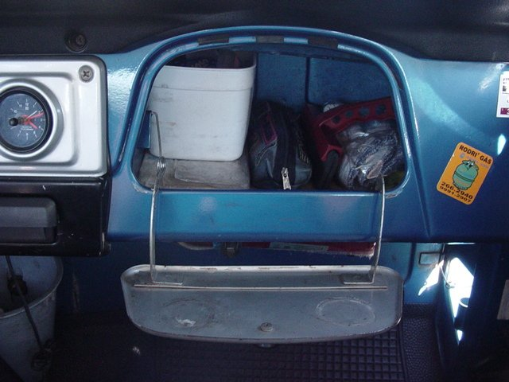 | 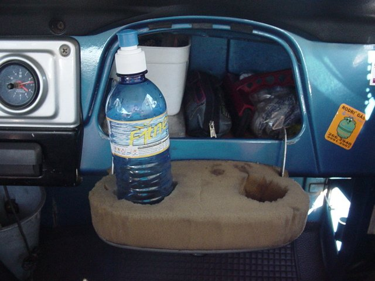 | 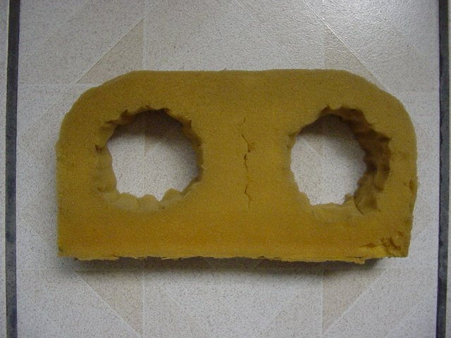 |
| Onde: | Feito em casa |
| Quando: | Jan/2001 |
| Preço: | De graça |
| Tempo: | 30 minutos |
| Detalhes: | A espuma eu achei no lixo, mas pode ser qualquer uma que seja dura. Basta usar uma tesoura boa ou estilete e cortar a espuma no formato da portinha do porta-luvas. Faça os buracos um pouco menores que o diâmetro do copo, para que ele possa ficar preso. A espuma fica presa pelas duas hastes que seguram a portinha, não precisa de cola, durex, nada. |
| Resultado: | Excelente. A espuma absorve as vibrações da toyota e o copo fica parado sem derramar. Fazendo um buraco normal e outro menor, também é possível colocar latinhas de alumínio e garrafas de água. E quando não quiser usá-lo, basta guardar dentro do próprio porta-luvas (amassado ou não). |
Porta-prancha no teto (interno)
| --- colocar foto --- |
| Onde: | Feito em casa |
| Quando: | Jan/2001 |
| Preço: | ? |
| Tempo: | 1 dia |
| Detalhes: | Tem que comprar dois pares de cinto de segurança baratinhos (Ching-Ling) e duas lâminas de metal doce (limável/cortável). Dos cintos usa-se apenas a parte "fêmea", que é fixada num parafuso do teto. As lâminas precisam ser limadas em uma extremidade para imitar o formato da ponta "macho" do cinto de segurança e dobradas 90 graus na outra extremidade. A ponta limada é encaixada na fêmea do cinto e a ponta dobrada é pendurada no teto por meio de um gancho. Este gancho deve ser fixado no teto, em meu caso usei rebite na forração interna (que é tipo um papelão). Para poder colocar a prancha pelada (sem capa protetora), forrei as lâminas com espuma. Também é bom pintar as lâminas para evitar ferrugem. |
| Resultado: | Mais ou menos. O lado bom é que a prancha fica segura na parte de dentro do carro, grudada ao teto, não atrapalhando os passageiros. Pelo fato de usar pedaços de cinto de segurança ao invés de fixar as lâminas diretamente na estrutura da toyota, o porta-prancha fica "desmontável". O lado ruim é que o suporte não fica tão firme quanto deveria e é necessário amarrar a prancha a ele para evitar pulos. |
| 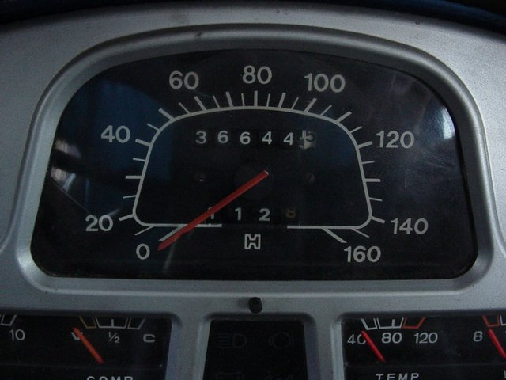 | 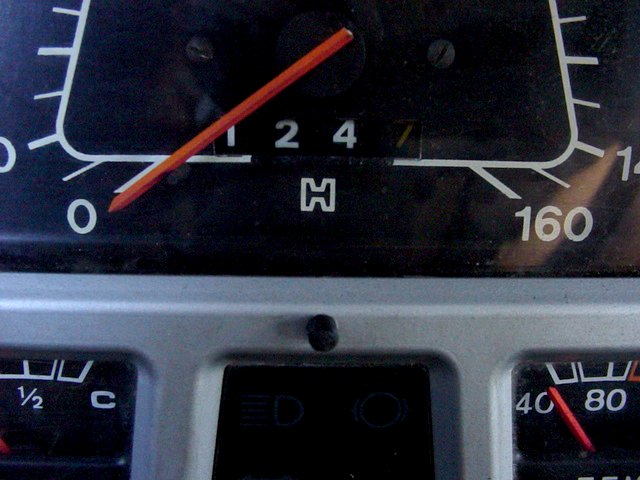 |
| Onde: | Velotec (Curitiba) |
| Quando: | 09/Fev/2002 |
| Preço: | R$ 100,00 |
| Tempo: | Um dia |
| Detalhes: | Foi colocado um odômetro de Gol (acho). A janela foi recortada logo abaixo do centro do ponteiro e parte da faixa branca do velocímetro foi pintada de preto para facilitar a visualização. O botão de Reset fica logo abaixo, na faixa cinza que separa o velocímetro das luzes indicadoras do painel. O cabo do velocímetro estragou duas vezes em um ano após a colocação, mas não tenho certeza se a culpa é da carga extra do odômetro. |
| Resultado: | Excelente. Se zerado a cada abastecida, aposenta o uso do marcador de combustível (e suas bóias que sempre estragam), além de facilitar o cálculo do consumo de diesel. |
Pneus BF All Terrain 265/75 R16
| 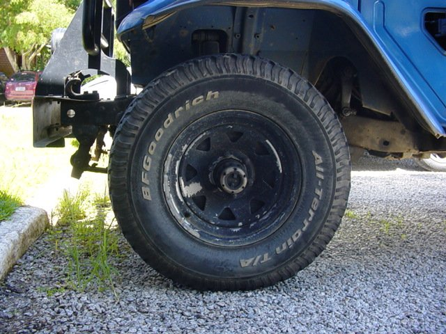 |
| Onde: | Equipneu (Curitiba) |
| Quando: | 03/Fev/2001 |
| Preço: | R$ 340,00 cada |
| Tempo: | 2 horas |
| Detalhes: | Não tem segredo: guardar muito dinheiro, ir na loja, comprar o jogo de pneus, colocá-los, fazer balanceamento, testar o brinquedinho novo :) |
| Resultado: | Excelente. Antes do BF eu tinha os lameiros (aqueles fininhos) que me rendiam altos sustos em dias de chuva e em ruas de paralelepípedos. Com os pneus novos a toyota grudou no asfalto. Por ser mais macio, acabou também aquela sensação de estar numa carroça, ele absorve o impacto e a toyota não treme mais. O lado ruim é que fica mais complicado para manobrar com o carro parado (dependendo do piso, não rola). Os pneus são muito caros, mas a toyota fica outra, confortável até :) e sua durabilidade beira os 80.000Km. |
Escapamento Original, mas "Reconfigurado" para Ficar Mais Alto
| --- colocar foto --- |
| Onde: | Zezus (Curitiba) |
| Quando: | 31/Jan/2001 |
| Preço: | R$ 115,00 (mão de obra) |
| Tempo: | 3 horas |
| Detalhes: | O kit de escapamento é o orinal da toyota, mas a forma de colocar as peças é que foi alterada. Corta daqui, solda dali, e a minhoca foi se formando. A posição do silenciador foi modificada, de maneira que ele ficou mais alto, escondido no vão (onde mesmo)????. Outra modificação foi na ponta de saída, que foi alongada e subiu na vertical uns 30 centímetros, para evitar entrada de água. |
| Resultado: | Excelente. Depois de mais de dois anos de uso, incluindo uma viagem ao deserto do Atacama, a adaptação provou ter sido bem-feita e nunca deu problema. Somando a colocação diferenciada do escapamento com os pneus BF aro 16 e o jogo de molas um pouquinho levantado, a toyota ficou bem alta em relação ao chão, sem exageros e perda de estabilidade. |
| 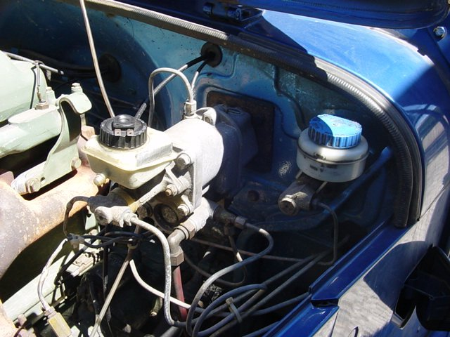 | 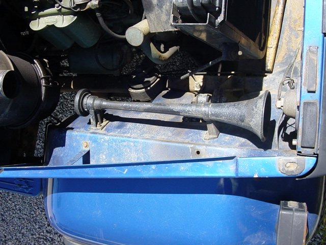 |
| Onde: | ? |
| Quando: | ? |
| Preço: | ? |
| Tempo: | ? |
| Detalhes: | Não sei detalhes sobre a instalação do kit pois quando a comprei a toyota já veio com ele. Os que viram me disseram que este é o kit original do 608 (o caminhãozinho). O compressor fica junto com o motor (foto 1) e o cilindrão que armazena o ar fica lá atrás, embaixo do assoalho do porta-malas. As mangueiras que os unem são de metal. |
| Resultado: | Excelente. É pisar no freio e sentir o poder de controlar o monstro metálico. Se pisar com vontade os pneus travam na hora, então numa emergência as famosas "bombadas" acompanhadas da redução forçada de marcha ajudam. Por falar nisso, o barulho que fazem os BFão quando cantam no asfalto é uma melodia agradável ao ouvido: grave, forte, encorpada. :) E de brinde tem ainda um bico que fica perto do acelerador onde se conecta uma mangueira pra soprar o pó de dentro do carro ou encher pneus/bóias/botes. Outra coisa que se ganha é a possibilidade de colocar buzina a ar (foto 2), igual as de trem/caminhão/barco, que tem tudo a ver com imponência da toyota. É proibido usá-la na cidade, mas no mato/trilha/estrada garante segurança e diversão. |
| 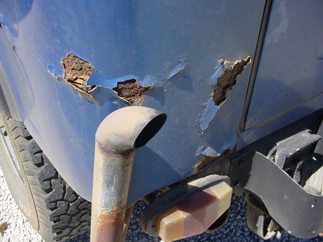 | 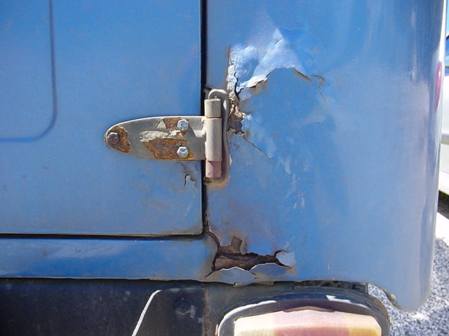 | 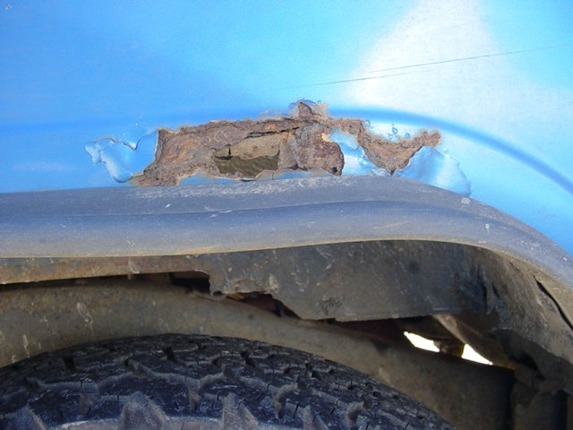 |
| Onde: | Por toda a lata |
| Quando: | Desde que vim para Floripa |
| Preço: | Muitos $$$$$ pra arrumar |
| Tempo: | Mais de um mês parada para reformar |
| Detalhes: | Com certeza os podres já existiam, mas estavam calminhos. Foi me mudar para Floripa (praia) e a maresia atiçou o câncer. As bolotas explodiram por toda a lata e continuam crescendo. Dá vontade de chorar de ver, é muito triste. O conserto é fazer a reforma geral, que custa para mais de R$ 2.000,00 e demora de 45 a 60 dias para ficar pronta. E o pior, mesmo reformando com carinho, a previsão é que a ferrugem comece a despontar novamente depois de 3 anos... |
| Resultado: | Mato sem cachorro. Estou estagnado olhando a ferrugem crescer e esperando cair do céu uma solução. |
fim.
{kind=link}
{kind=link}
{kind=link}
{kind=link}
{kind=link}
{kind=link}
{kind=link}
{kind=link}
{kind=link}
{kind=link}
{kind=link}